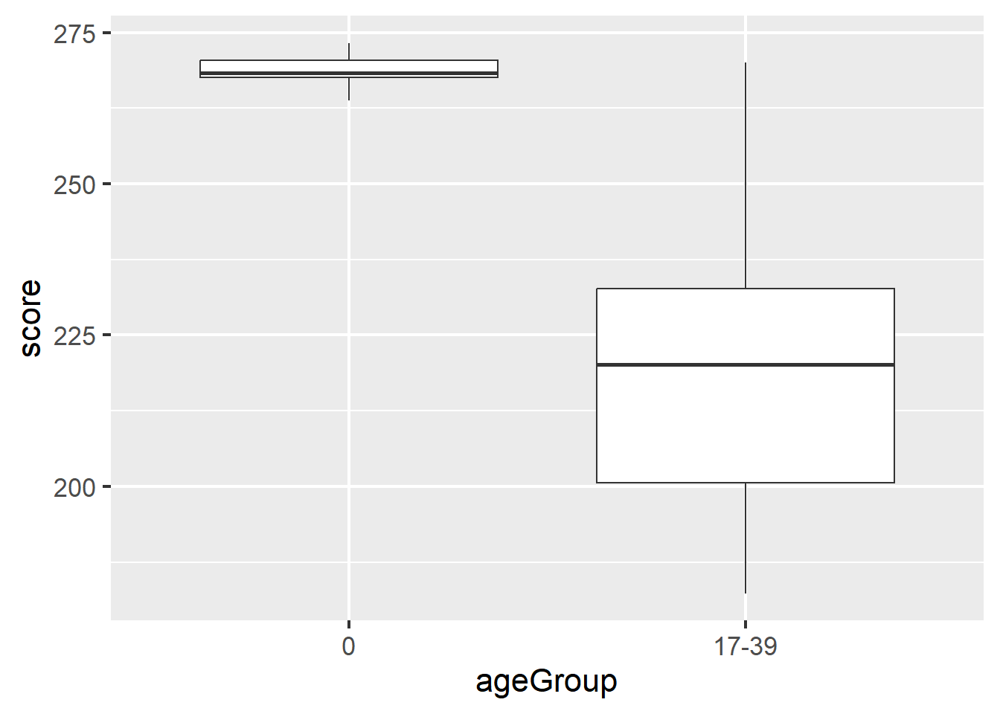
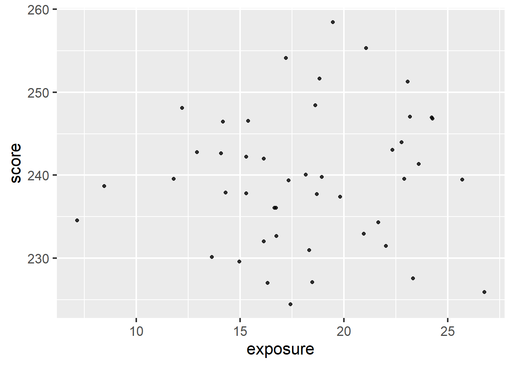
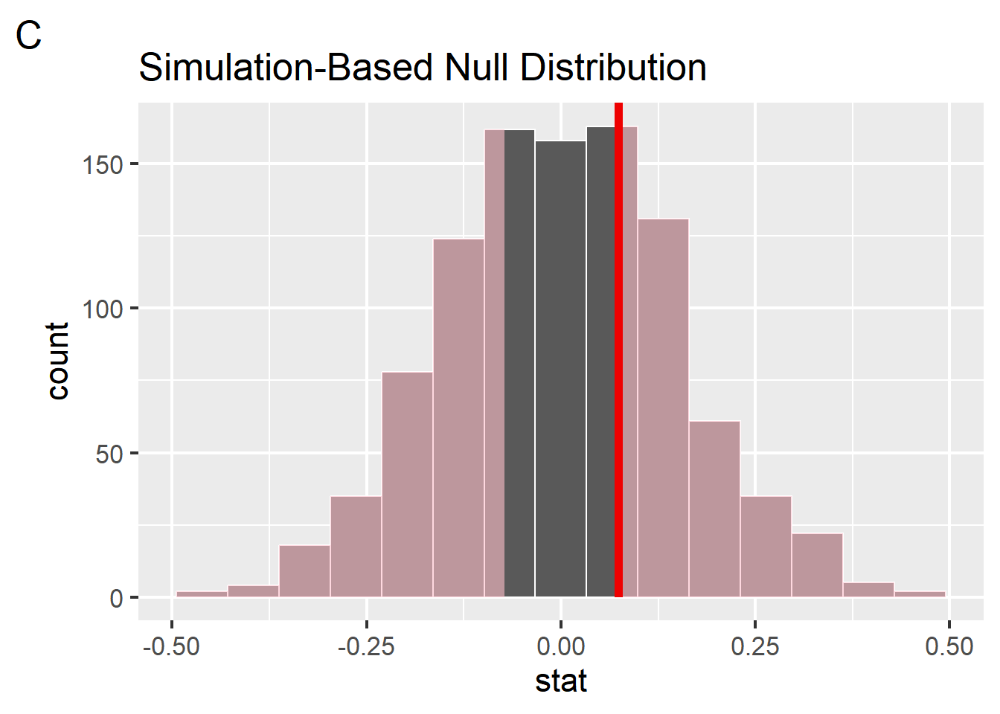
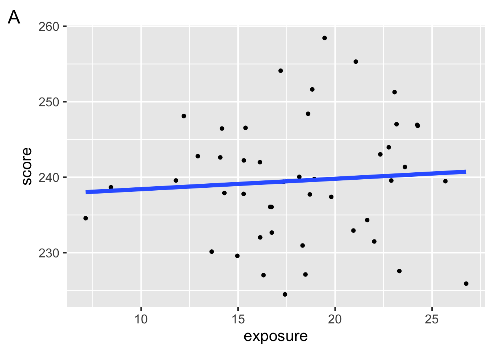
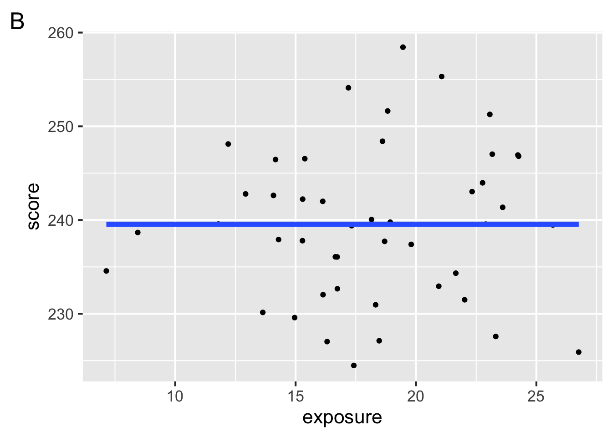

You may need more time if programming is completely new to you, or less if you have some experience already.
Instructions
The quiz is closed book/note/computer/phone
If you need to use the restroom, leave your exam and phone with the TA
You have 60 minutes to complete the quiz. If you finish early, you may turn in your quiz and leave early
The data
This quiz refers to data simulated from Johnson & Newport (1989), who studied the English language proficiency of 46 native Korean or Chinese speakers who arrived in the US between the ages of 3 and 39. The researchers were interested in whether the participants’ age of arrival to the United States played a role in their English language proficiency.
The simulated data are stored in the tibble johnson_newport_1989. Here is a glimpse() at the tibble for your reference:
Johnson and Newport (1989) reported the mean and standard deviation of participants’ scores on the English proficiency test, grouped by an ageGroup variable, which divides age into 5 groups. Below we computed the median and IQR as the descriptive statistics on our simulated data. Then, we used infer to generate the sampling distribution for the 17-39 year old age group, visualize the distribution, and shade the confidence interval.
# A. compute descriptive statistics by group johnson_newport_1989 %>%group_by(ageGroup) %>%summarise(n =n(), median =median(score), lower =quantile(score, 0.25), upper =quantile(score, 0.75))
# B. generate the sampling distribution 17-39 groupsamp_distribution <- johnson_newport_1989 %>%filter(ageGroup =="17-39") %>%specify(response = score) %>%generate(reps =1000, type ="bootstrap") %>%calculate(stat ="median")
# C. get confidence interval ci <- samp_distribution %>%get_confidence_interval(type ="percentile", level =0.68)
# D. visualize sampling distribution and confidence interval samp_distribution %>%visualize() +shade_ci(endpoints = ci)
True or false, the descriptive statistics reported above are parametric.
True
False
The sampling distribution of the median looks approximately Gaussian. The probability densitiy function for the Gaussian distribution is given by which of the following equations?
Fill in the blanks in the sentence below to describe what happens on each repeat in code B above, in which we constructed the sampling distribution.
Draw __________ data points _____________ replacement, compute the ____________.
The shaded area of the figure shows a 68% confidence interval. If we were to increase the level of confidence to 95%, the confidence interval would become:
Narrower
Broader
Stay the same
There’s insufficient information to determine this
2 Hypothesis testing
Suppose we want to know whether the participants who arrived as adults (17-39 age group) acheived native performance. We decide to address this question via the 3-step hypothesis testing framework in which we investigate the difference in medians between the native English speakers (0 age group) and the 17-39 age group.
# A. visualize difference with a boxplotjohnson_newport_1989 %>%filter(ageGroup %in%c("0", "17-39")) %>%ggplot(aes(y = score, x = ageGroup)) +geom_boxplot()

# B. compute observed difference in meansdiff_medians <- johnson_newport_1989 %>%filter(ageGroup %in%c("0", "17-39")) %>%specify(response = score, explanatory = ageGroup) %>%calculate(stat ="diff in medians", order =c("0", "17-39"))
# C. construct the null distribution with infernull_distribution <- johnson_newport_1989 %>%filter(ageGroup %in%c("0", "17-39")) %>%specify(response = score, explanatory = ageGroup) %>%hypothesize(null ="independence") %>%generate(reps =1000, type ="permute") %>%calculate(stat ="diff in medians", order =c("0", "17-39"))
# D. visualize the null and shade p-valuenull_distribution %>%visualize() +shade_p_value(obs_stat = diff_medians, direction ="both")
Step 1 is to pose the null hypothesis. True or false, the null hypothesis here is that the observed difference in medians is due age group (age of arrival in the US).
True
False
Step 2 is to ask, if the null hypothesis is true, how likely is our observed pattern of results? We quantify this likelihood with:
diff in medians
correlation
liklihood estimation
p-value
Step 3 is to decide whether to reject the null hypothesis. Johnson and Newport concluded that the two groups were significantly different from each other, suggesting that participants who arrived to the US after age 17 did not acheive native proficiency. This implies that they:
Reject the null hypothesis
Fail to reject the null hypothesis
Prove the research hypothesis to be true
Prove the null hypothesis to be true
When we calculate the p-value from the simulated null distribution using the get_p_value() function, we get p = 0. Is this a problem? Why or why not? Explain what a p-value of 0 means in this context.
3 Correlation
Johnson and Newport (1989) also wanted to ask whether years of exposure to English predicted score on the English proficiency task. To address this, they computed the correlation between score and exposure.

Given the scatterplot of these data, which of the following could be their observed correlation?
\(-0.88\)
\(0.88\)
\(0.16\)
\(0.5\)
True or false, the correlations computed on these data were subject to sampling variability.
True
False
Johnson and Newport used hypothesis testing to determine whether the correlation they observed was significantly different from zero. We computed a p-value of 0.624 on the correlation we observed in our simulated data. Which figure could represent this p-value visualized on a null distribution generated nonparametrically from 1000 repetitions?

What type of relationship does the correlation between years of exposure and score suggest?
Linear
Nonlinear
Independence
Permute
4 Model specification
Below are two different models, A and B, of Johnson and Newport’s data on whether years of exposure to English predict participant scores on the grammaticality judgement task. The models are fitted with information about both measures.


Which of the following best describes model B?
supervised learning, classification model
supervised learning, regression model
unsupervised learning, classification model
unsupervised learning, regression model
Suppose that a model is specified with one response and one explanatory variables. Which of the following could be used to express the model? Choose all that apply.
\(y = ax+b\)
\(y = w_0 + w_1x_1 + w_2x_2\)
\(y = β_0 + β_1x_1 + \epsilon\)
\(y = Xβ + ε\)
Which of the following model terms are included in model A?
intercept
main
interaction
transformation
Which of the following model terms are included in model B?